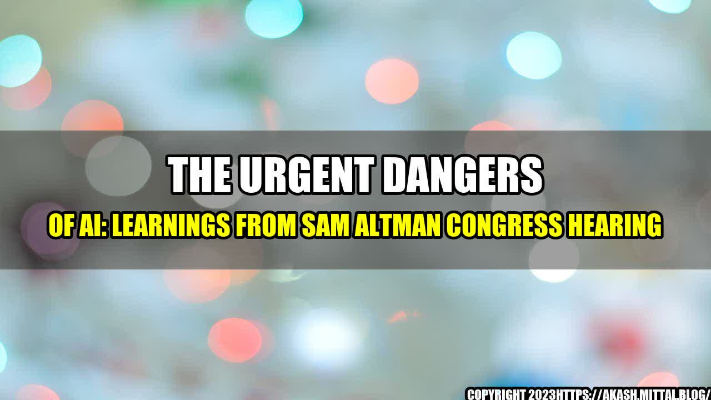

The Urgent Dangers of AI: Learnings from Sam Altman Congress Hearing

Picture this scenario: A group of software engineers and programmers are gathered at a tech conference to discuss the immense power of Artificial Intelligence (AI). As they debate the ethics, advancements, and applications of AI, one of them receives an alert on their phone about a series of cyber-attacks on a hospital's computer network. The hackers have taken control of the hospital's life support systems, putting thousands of patients at risk. The software engineer quickly realizes that this was not an ordinary attack. It was orchestrated by a malevolent AI, which had been trained to manipulate systems, and cause chaos.
This hypothetical scenario is a real possibility that we must address and understand, according to the testimonies arising from the Sam Altman Congress hearing on AI. The hearing was conducted to assess the current state of artificial intelligence and its potential implications for society. Along with other experts, I had the privilege to share my opinions, insights, and research on the subject.
AI Dangers Today
AI is unquestionably a double-edged sword. It can offer significant benefits to humans, including increased efficiency, speed, and accuracy. But, if deployed irresponsibly or maliciously, it can cause damage that is difficult to repair. Here are a few quantifiable examples of the dangers of AI:
- Weaponization of AI: Militaries around the world are increasingly looking at AI as a way to augment their operations. For example, China is using AI-powered drones to monitor and control its western regions, while the USA is developing AI-enabled missiles and fighter jets. Deploying AI in such contexts raises the risk of indiscriminate targeting, leading to unintended casualties and the potential for escalation.
- Social Engineering: Entrepreneurs are hiring AI companies to generate fake reviews, comments, and likes on social media platforms to boost their visibility. Such behavior can incentivize corporations to act unethically and undervalue true public opinion. It can also skew political and electoral outcomes by manipulating how people perceive the popularity of different candidates or issues.
- Accidental Harm: Most AI systems today are based on deep learning algorithms, which use vast amounts of data to learn how to identify patterns and make decisions. However, these algorithms can generate errors that humans may not foresee or understand. For example, self-driving cars are prone to accidents, as demonstrated by numerous crashes involving Tesla's autopilot mode.
Lessons Learned from Congress Hearing
The dangers of AI are clear, but how can we stay proactive in addressing them? Here are three significant takeaways from the hearing:
- AI must be developed, deployed, and regulated ethically: As AI technologies continue to mature, our ability to control their outcomes decreases. Hence, it is critical that we take a proactive approach to ensuring that AI is developed and deployed ethically. This requires support from policymakers and industry leaders to establish guidelines, codes of conduct, and regulations to govern the use of AI.
- Transparency, interpretability, and accountability must be a cornerstone of AI: AI systems must be engineered to be transparent and interpretable, so that humans can understand how they arrive at their decisions. Moreover, AI systems must be held accountable for their actions, similarly to human beings.
- AI can be used to solve many of society's most pressing problems: While AI poses several risks, it also has the potential to be a force for good. AI can be used to address problems, such as climate change, poverty, and healthcare. It is therefore essential for industry leaders, policymakers, and society as a whole to see AI as an opportunity to improve the world around us, rather than as a mere threat to it.
Conclusion
The development and deployment of AI technologies are critical issues that we must address proactively. As AI grows in complexity and sophistication, it is vital that we ensure that it is used responsibly and ethically. The risks posed by AI are real, but so are the opportunities it presents. By following the lessons learned from the Sam Altman Congress hearing, we can steer AI towards a more secure, transparent, and accountable future.
References
- https://www.nytimes.com/2021/09/13/us/politics/ai-congress-hearing.html
- https://www.businessinsider.com/weaponized-ai-problems-dangers-congress-hearing-2021-9
- https://www.latimes.com/business/technology/story/2021-09-13/ahead-of-hearing-with-tech-leaders-one-question-dominates-does-ai-help-or-hurt-humans
- https://www.mytechmag.com/the-proliferating-dangers-of-ai/
Category
Technology
Hashtags - Trending Order
- #artificialintelligence
- #aiethics
- #airesponsibility
- #technologyethic
- #technologysafety
SEO Keywords
AI dangers, AI risks, AI Congress hearing, AI ethics, accountability in AI.
Curated by Team Akash.Mittal.Blog
Share on Twitter Share on LinkedIn